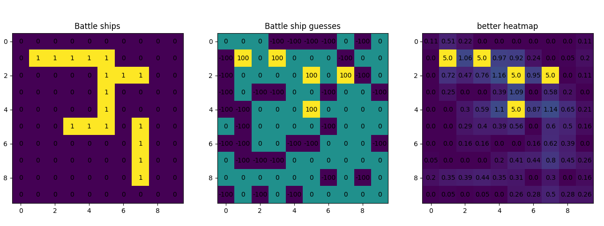
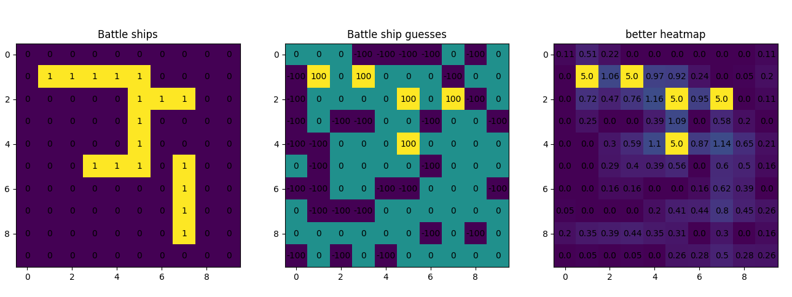
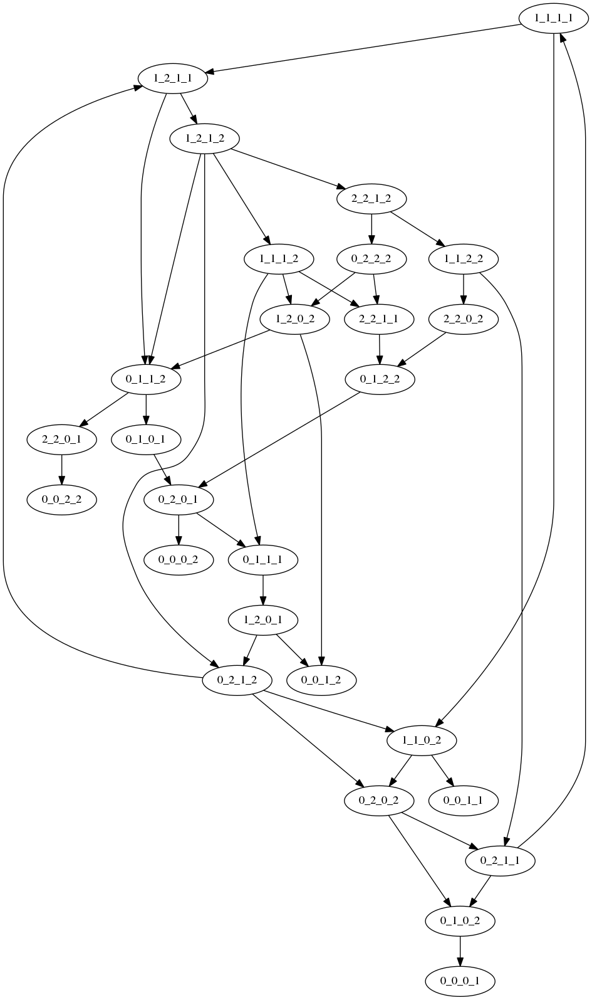
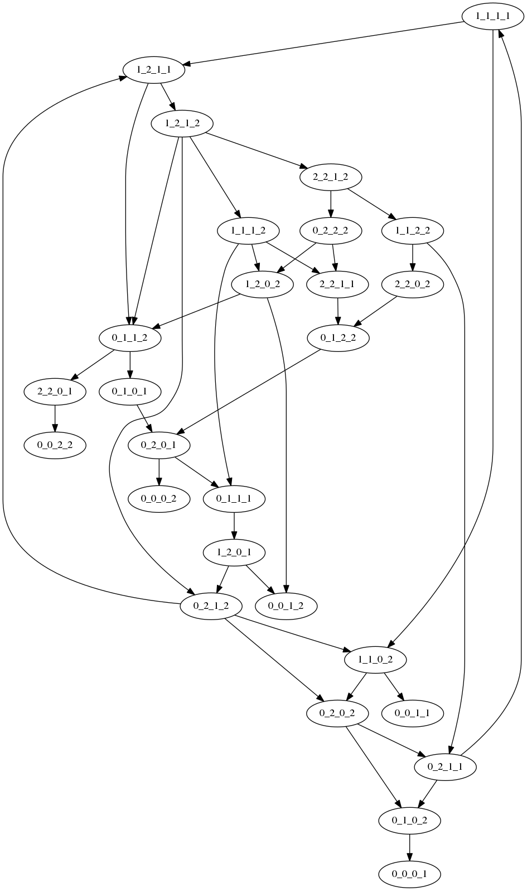

Math
I love math.
Here are some of my favorite theorems:
- The convolution theorem
- The Bolzano-Weierstrass theorem
- The Fundamental Theorem of Calculus
- The Mean Value Theorem
Here are some ways that I have been involved with math:
Math teams:
- Belmont High School Math Team (4 years, captain as a senior)
- ARML (Eastern MA) 9th and 10th grade
Competitions:
- GBML
- MAML
- AMC10/12
- HMMT
- ARML
- AIME
Resources:
- Khan Academy (Sal Khan taught me Algebra2, Precalculus, Calculus, and Physics)
- Art of Problem Solving
- Vector Calculus, Linear Algebra, and Differential Forms
Camps:
Classes
- I "took" (i.e. independently learned) Algebra2, Precalculus, Calculus, and Physics through Khan Academy (and thus was able to skip 3 grades of math, and take AP Calculus and AP Physics as a freshman).
- I took Linear Algebra and Multivariable Calculus in 10th grade at the Harvard Extension School (21a/b)
- I took some proof based classes in 11th grade at the Harvard Extension School (23a/b)
- I qualified for the MIT PRIMES research program and worked on a cool computer science project
- I took a Digital Signal Processing class through Coursera
One reason why I like math is because it is beautiful
Here are some of my favorite math pictures:

 



 
